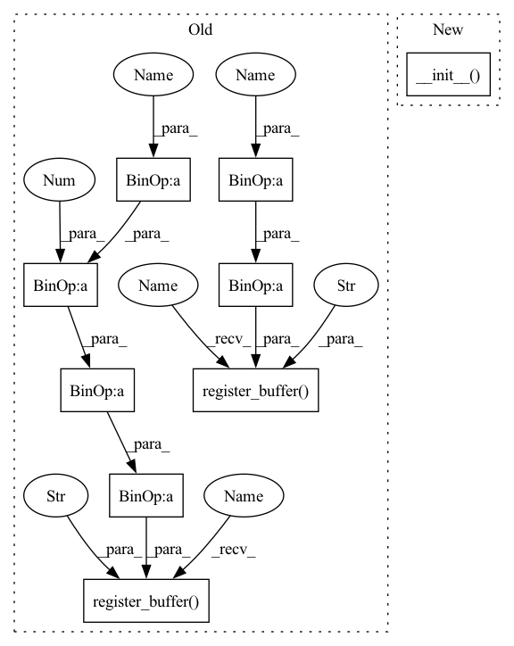

Pattern ID :13732

Before Change
self.fc2 = nn.Linear(channels // reduction, 2*k*channels)
self.sigmoid = nn.Sigmoid()
self.register_buffer("lambdas", torch.Tensor([1.]*k + [0.5]*k).float())
self.register_buffer("init_v", torch.Tensor([1.] + [0.]*(2*k - 1)).float())
def forward(self, x):
assert x.shape[1] == self.channels
// BxCxL
After Change
class DyReLUB(DyReLU):
def __init__(self, channels, reduction=4, k=2, conv_type="2d"):
super(DyReLUB, self).__init__(channels, reduction, k, conv_type)
self.fc2 = nn.Linear(channels // reduction, 2*k*channels)
def forward(self, x):
assert x.shape[1] == self.channels
In pattern: SUPERPATTERN
Frequency: 3
Non-data size: 9
Instances
Fragment ID: 45935292
Project Name: islanna/dynamicrelu
Commit Name: 1ee4394be4c9e5517d7dc2e5605416b65b321e53
Time: 2020-04-14
Author: slizhikova.a.v@gmail.com
File Name: dyrelu.py
M Class Name: DyReLUB
N Class Name: DyReLUB
M Method Name: __init__(5)
N Method Name: __init__(4)
M Parent Class: DyReLU
N Parent Class: nn.Module
M File Name: dyrelu.py
N File Name: dyrelu.py
M Start Line: 40
M End Line: 50
N Start Line: 56
N End Line: 57
'>
Before Change
self.fc2 = nn.Linear(channels // reduction, 2*k*channels)
self.sigmoid = nn.Sigmoid()
self.register_buffer("lambdas", torch.Tensor([1.]*k + [0.5]*k).float())
self.register_buffer("init_v", torch.Tensor([1.] + [0.]*(2*k - 1)).float())
def forward(self, x):
assert x.shape[1] == self.channels
// BxCxL
After Change
class DyReLUB(DyReLU):
def __init__(self, channels, reduction=4, k=2, conv_type="2d"):
super(DyReLUB, self).__init__(channels, reduction, k, conv_type)
self.fc2 = nn.Linear(channels // reduction, 2*k*channels)
def forward(self, x):
assert x.shape[1] == self.channels
'>
Fragment ID: 45935294
Project Name: islanna/dynamicrelu
Commit Name: 1ee4394be4c9e5517d7dc2e5605416b65b321e53
Time: 2020-04-14
Author: slizhikova.a.v@gmail.com
File Name: dyrelu.py
M Class Name: DyReLUB
N Class Name: DyReLUB
M Method Name: __init__(5)
N Method Name: __init__(4)
M Parent Class: DyReLU
N Parent Class: nn.Module
M File Name: dyrelu.py
N File Name: dyrelu.py
M Start Line: 40
M End Line: 50
N Start Line: 56
N End Line: 57
'>
Before Change
self.sigmoid = nn.Sigmoid()
self.channels = channels
self.register_buffer("lambdas", torch.Tensor([1.]*k + [0.5]*k).float())
self.register_buffer("init_v", torch.Tensor([1.] + [0.]*(2*k - 1)).float())
def forward(self, x):
assert x.shape[1] == self.channels
// BxCxL
After Change
class DyReLUA(DyReLU):
def __init__(self, channels, reduction=4, k=2, conv_type="2d"):
super(DyReLUA, self).__init__(channels, reduction, k, conv_type)
self.fc2 = nn.Linear(channels // reduction, 2*k)
def forward(self, x):
assert x.shape[1] == self.channels
'>
Fragment ID: 45935289
Project Name: islanna/dynamicrelu
Commit Name: 1ee4394be4c9e5517d7dc2e5605416b65b321e53
Time: 2020-04-14
Author: slizhikova.a.v@gmail.com
File Name: dyrelu.py
M Class Name: DyReLUA
N Class Name: DyReLUA
M Method Name: __init__(5)
N Method Name: __init__(4)
M Parent Class: DyReLU
N Parent Class: nn.Module
M File Name: dyrelu.py
N File Name: dyrelu.py
M Start Line: 7
M End Line: 18
N Start Line: 37
N End Line: 38
'>
Before Change
Initialize the MzEncoder
super().__init__()
n_sin = int(dim_model / 2)
n_cos = dim_model - n_sin
scale = max_wavelength / (2 * np.pi)
sin_term = scale ** (torch.arange(0, n_sin).float() / (n_sin - 1))
cos_term = scale ** (torch.arange(0, n_cos).float() / (n_cos - 1))
self.register_buffer("sin_term", sin_term)
self.register_buffer("cos_term", cos_term)
def forward(self, X):
Encode positions in a sequence.
After Change
def __init__(self, dim_model, min_wavelength=1, max_wavelength=10000):
Initialize the MzEncoder
super().__init__(
dim_model=dim_model,
min_wavelength=min_wavelength,
max_wavelength=max_wavelength,
)
def forward(self, X):
Encode positions in a sequence.
'>
Fragment ID: 45935285
Project Name: wfondrie/depthcharge
Commit Name: 263bbd6e1db05f1afbb5b8ea759129c467667026
Time: 2023-03-23
Author: wfondrie@talus.bio
File Name: depthcharge/components/encoders.py
M Class Name: PositionalEncoder
N Class Name: PositionalEncoder
M Method Name: __init__(4)
N Method Name: __init__(3)
M Parent Class: FloatEncoder
N Parent Class: torch.nn.Module
M File Name: depthcharge/components/encoders.py
N File Name: depthcharge/components/encoders.py
M Start Line: 145
M End Line: 154
N Start Line: 175
N End Line: 181